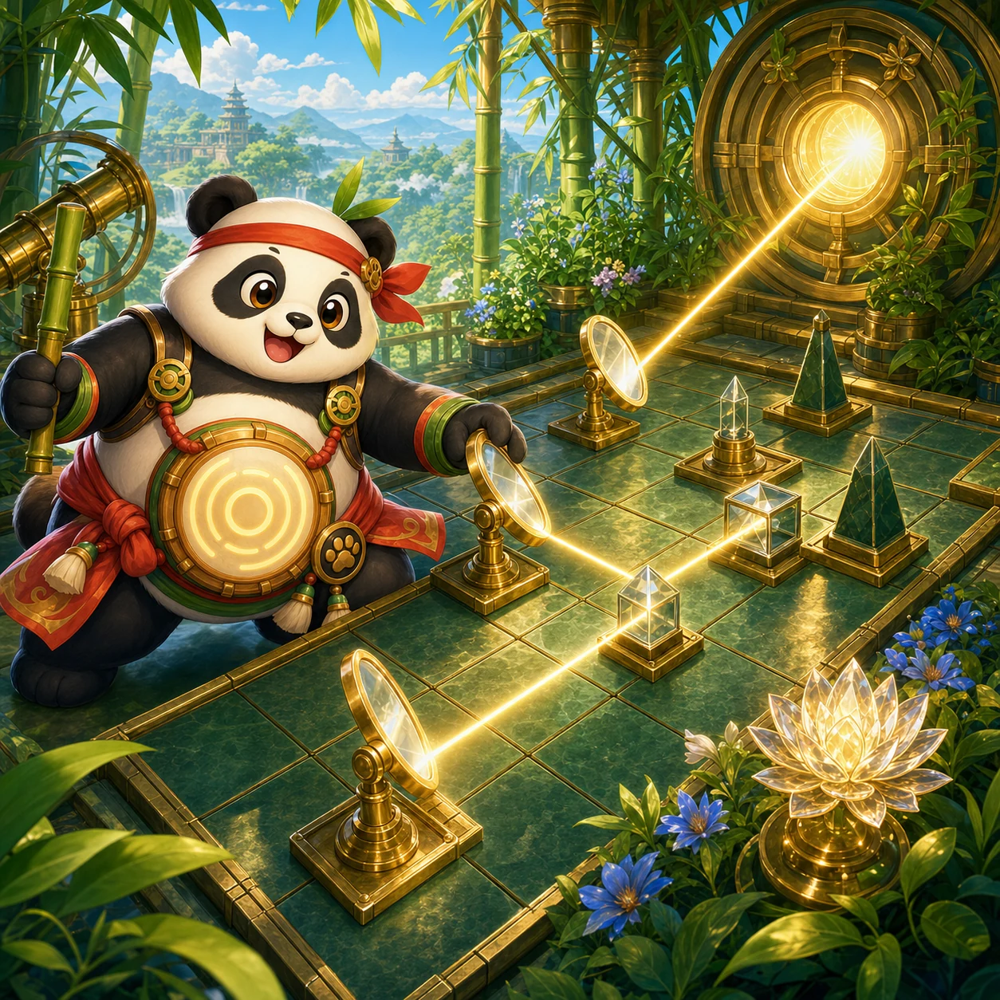

PANKO'S SUNLIT GARDEN
Turn mirrors so warm sunlight reaches every sleeping plant.
PLANT AWAKENED
Rotate each mirror. The beam travels one cell at a time and only a real hit on the plant clears the garden.